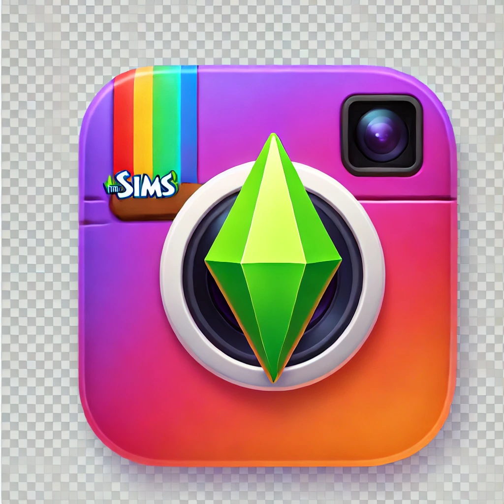

Revitalização Residencial
Um novo projeto visa modernizar apartamentos antigos, trazendo mais conforto e acessibilidade para os moradores.
Fundada por Andrew Nightfall, a Rainbow Llama nasceu com o propósito de transformar comunidades e inspirar mudanças. Através de projetos inovadores em habitação, lazer e cultura, buscamos criar um impacto positivo e duradouro. Nosso compromisso vai além do desenvolvimento urbano — acreditamos que cada espaço pode contar uma história e cada iniciativa pode conectar pessoas.
Um novo projeto visa modernizar apartamentos antigos, trazendo mais conforto e acessibilidade para os moradores.
O recém-inaugurado clube atrai jovens de todo o país, oferecendo música ao vivo e um ambiente vibrante.
O misterioso benfeitor investe na restauração de áreas históricas, promovendo cultura e turismo local.
Além de financiar projetos sociais, ele surpreende ao comandar um restaurante de luxo nas noites de sexta-feira

Apesar dos rumores, ele insiste que sua missão é ajudar sem precisar de um cargo público. Mas será verdade?
Após anos de especulação, a identidade do generoso doador finalmente vem à tona, chocando a sociedade.